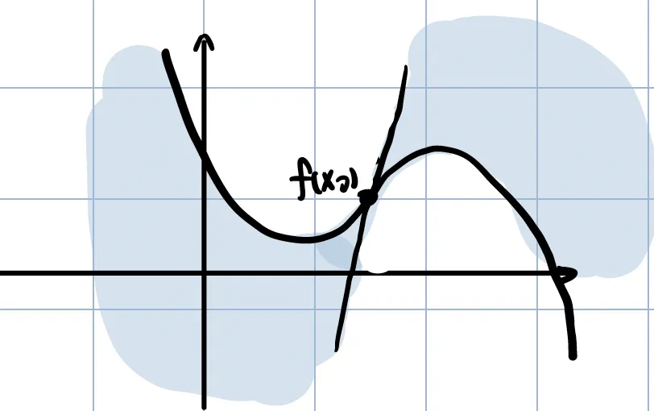
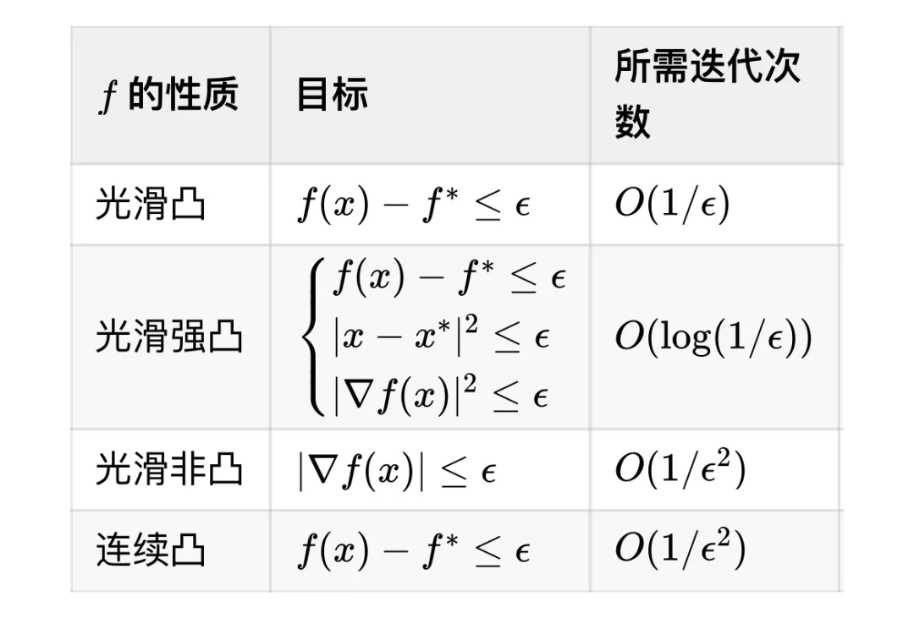
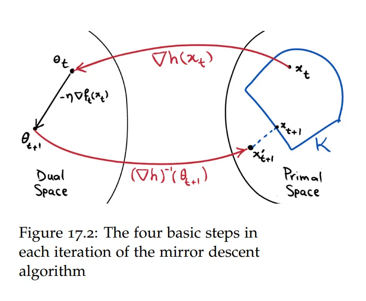
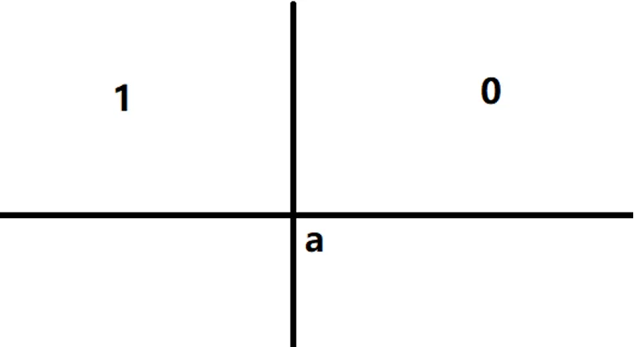
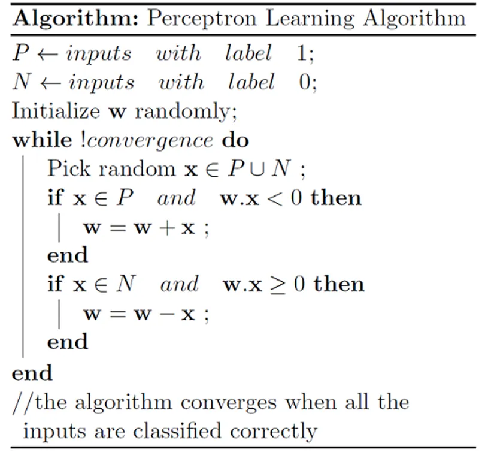
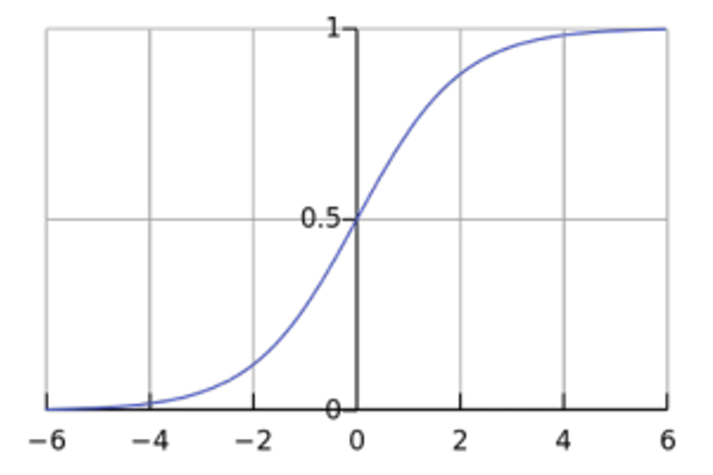
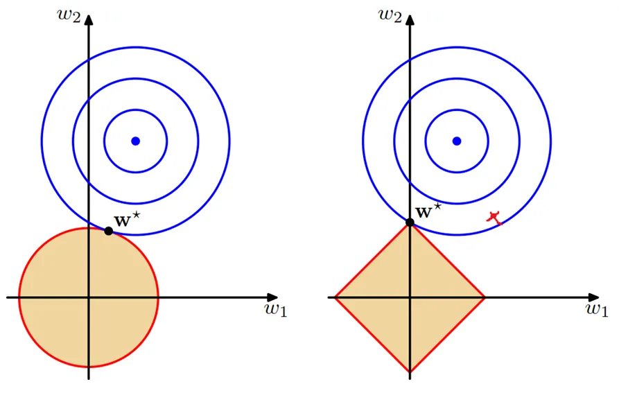
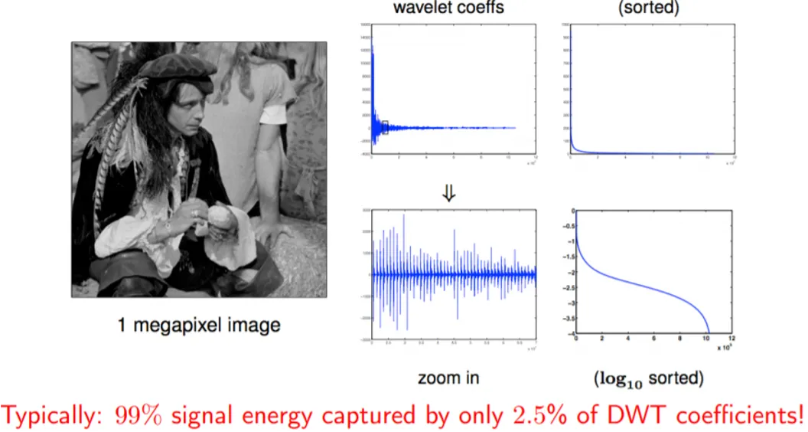
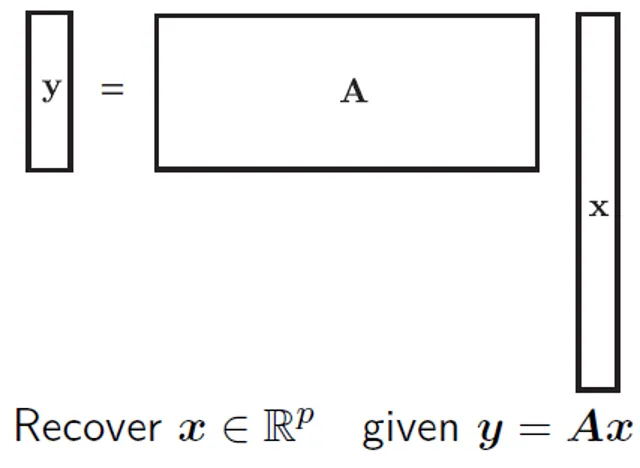

0.饭后甜品,你不能指望跟正餐一起
Everything should be made as simple as possible, but not simpler. Albert Einstein.
记得高三的时候写过一篇作文,文章的立意大概是 “整顿旗鼓再出发” 。是啊,多少次,我们奋力狂奔,迎接着狂风骤雨的敲打,却不愿意放慢脚步,从对未来不确定性的焦虑之中跳脱出来,看看自己的来时路,看看昨日之我、今日之我。在忙忙叨叨之中时光便流逝掉了,有时不妨做点 reflection,整理一下杂乱的思绪和没想明白的问题。
另一个落在实处的动机是我发现我学东西有个特点,就是忘东西很快。如果不留下点东西呢,会忘,然后忘了没有笔记又很难捡起来。 所以我想,为什么不在自己对这个领域的内容认识最深刻的时候留下点记忆,寄希望于未来的自己或者或许对机器学习有兴趣的读者能够通过今日的一篇文章了解一些今日之我所思所想的一些内容呢,于是就诞生了这篇文章。
但这件事怎么看都还是很呆,都考完了,然后在写的过程中肯定又能学到点东西。一位朋友跟我说 “饭后甜品,你不能指望跟正餐一起” ,于是本着一个品味甜品的食客的心态,我决定将这篇文章尽量写的轻量化一点、故事性强一点,穿起一个思考的主线。
1. Optimization
优化问题自然而然地出现在许多应用领域中。无论人们做什么,在某些时候,他们都会产生一种想要以最佳方式组织事物的渴望。这种意图,当被转换成数学形式时,就会变成某种类型的优化问题。下面介绍几种优化算法,包括：Gradient Descent, Stochastic Gradient Descent, SVRG, Mirror Desent, Linear Coupling.
1.1 L-Smooth & Convex
在优化函数的时候,我们往往需要一些有关函数性质的保障,才能够确保他有好的收敛率。
L-smooth
以下三条等价：
-
$f(x) \leq f(x_0) + \langle \nabla f(x_0), x-x_0 \rangle + \frac{L}{2}||x-x_0||^2$
-
$|\lambda_{\nabla^2 f(x)}| \leq L$
-
$||\nabla f(x) - \nabla f(y)|| \leq L||x-y||$
注意到L-smooth其实告诉我们的是梯度变化不会太快,另外一个有趣的看法是：
- Upper Bound: $f(x) \leq f(x_0) + \langle \nabla f(x_0), x-x_0 \rangle + \frac{L}{2}||x-x_0||^2$
- Lower Bound: $f(x) \geq f(x_0) + \langle \nabla f(x_0), x-x_0 \rangle - \frac{L}{2}||x-x_0||^2$
也就是说给定一个点$f(x_0)$的零阶和一阶信息,我们就可以获得别的点的函数值的一个二次型的上下界。 
Convex
以下四条等价：
- $ f(x) \geq f(x_0) + \langle \nabla f(x_0), x - x_0 \rangle $
- $ f(x) \leq f(x_0) + \langle \nabla f(x), x - x_0 \rangle $
- $ \lambda_{\min}(\nabla^2 f(x)) \geq 0 $
- $ \frac{1}{T} \sum_{i=1}^{T} f(x_i) \geq f(\bar{x}), \quad \bar{x} = \frac{1}{T} \sum_{i=1}^{T} x_i $
$\mu$-strongly Convex
以下三条等价：
- $ f(x) \geq f(x_0) + \langle \nabla f(x_0), x - x_0 \rangle + \frac{\mu}{2} |x - x_0|^2 $
- $ \lambda_{\min}(\nabla^2 f(x)) \geq \mu $
- $ |\nabla f(x) - \nabla f(y)| \geq \mu |x - y| $
Convex & L-Smooth:
在一个函数又convex又L-Smooth的情况下,我们会有一些更好的性质：
Thm.1 $$ f(y) - f(x) - \langle \nabla f(x), y - x \rangle \geq \frac{1}{2L} |\nabla f(x) - \nabla f(y)|^2 $$
证明如下:
令 $h(y) = f(y) - f(x) - \langle \nabla f(x), y - x \rangle$
注意到
$$
\nabla h(y) = \nabla f(y) - \nabla f(x)
$$
$$
\nabla^2 h(y) = \nabla^2 f(y)
$$
所以说$h(y)$也是convex且L-smooth的,而且最小值点在$y=x$处取的。
所以,
$$
h(x) \leq h(y - \frac{1}{L} \nabla h(y))\
$$
$$\leq h(y) - \frac{1}{L} |\nabla h(y)|^2 + \frac{1}{2L} |\nabla h(y)|^2
$$
$$
=h(y) - \frac{1}{2L} |\nabla h(y)|^2
$$
因此,
$$
f(y) - f(x) - \langle \nabla f(x), y - x \rangle \geq \frac{1}{2L} |\nabla f(y)-\nabla f(x)|^2
$$
Thm.2 $$ \langle \nabla f(x) - \nabla f(y), x - y \rangle \geq \frac{1}{L} |\nabla f(x) - \nabla f(y)|^2$$
这个的证明可以由Thm.1交换$x,y$次序之后相加得到。
1.2 Gradient Descent
GD的update rule如下: $$x_{t+1}=x_{t}-\eta \nabla f(x_t)$$ 在以下三种情况下,分别有不同的收敛率：
Convex, L-Smooth
$$ x_{t+1} = x_t - \eta \nabla f(x_t) $$
$$ f(x_{t+1}) \leq f(x_t) + \langle \nabla f(x_t), x_{t+1} - x_t \rangle + \frac{L}{2} |x_{t+1} - x_t|^2 $$
$$ = f(x_t) - \eta |\nabla f(x_t)|^2 - \frac{L \eta^2}{2} |\nabla f(x_t)|^2 $$
取$\eta \leq \frac{1}{L}$:
$$ f(x_{t+1}) \leq f(x_t) - \frac{\eta}{2} |\nabla f(x_t)|^2 $$
由convexity:
$$ f(x_{t+1}) \leq f(x^*) + \langle \nabla f(x_t), x_t - x^* \rangle - \frac{\eta}{2} |\nabla f(x_t)|^2 $$
$$ = f(x^*) - \frac{1}{\eta} \langle x_{t+1} - x_t, x_t - x^* \rangle - \frac{1}{2\eta} |x_{t+1} - x_t|^2 $$
$$ = f(x^*) - \frac{1}{2\eta} |x_{t+1} - x^*|^2 + \frac{1}{2\eta} |x_t - x^*|^2 $$
接下来我们做telescope:
$$ \sum_{t=0}^{T-1} (f(x_{t+1}) - f(x^*)) \leq \frac{1}{2\eta} (|x_0 - x^*|^2 - |x_T - x^*|^2) $$
因为$f(x_t)$是单调递减的(convex保证)
$$ f(x_T) - f(x^*) \leq \frac{1}{2\eta T} |x_0 - x^*|^2 = \epsilon $$ 所以说 $$ T = \frac{|x_0 - x^*|^2}{2\eta \epsilon} = O\left(\frac{L}{\epsilon}\right) $$ 在这种情况下需要迭代$O(\frac{1}{\epsilon})$次,收敛率为$O(\frac{1}{T})$.
$\mu$-strongly Convex & L-smooth
这里起手式我们卡$||x-x^*||$: $$ |x_{t+1} - x^*|^2 = |x_t - \eta \nabla f(x_t) - x^*|^2 $$
$$ = |x_t - x^*|^2 - 2\eta \langle \nabla f(x_t), x_t - x^* \rangle + \eta^2 |\nabla f(x_t)|^2 $$ 因为强凸性： $$ f(y) \geq f(x) + \langle \nabla f(x), y - x \rangle + \frac{\mu}{2} |y - x|^2 $$
代入 $x = x_t$, $y = x^*$:
$$ f(x^*) \geq f(x_t) + \langle \nabla f(x_t), x^* - x_t \rangle + \frac{\mu}{2} |x_t - x^*|^2 $$
$$ \langle \nabla f(x_t), x_t - x^* \rangle \geq f(x_t) - f(x^*) + \frac{\mu}{2} |x_t - x^*|^2 $$ 所以 $$ |x_{t+1} - x^*|^2 \leq |x_t - x^*|^2 - 2\eta (f(x_t) - f(x^*) + \frac{\mu}{2} |x_t - x^*|^2） + \eta^2 |\nabla f(x_t)|^2 $$ 根据之前的Thm.1: $$ \frac{1}{2L} |\nabla f(x_t)|^2 \leq f(x_t) - f(x^*) $$ 所以 $$ |x_{t+1} - x^*|^2 \leq (1 - \eta \mu) |x_t - x^*|^2 + (2\eta^2 L - 2\eta )(f(x_t) - f(x^*)) $$
取 $\eta = \frac{1}{L}$:
$$ |x_{t+1} - x^*|^2 \leq (1 - \frac{\mu}{L}) |x_t - x^*|^2 $$ 所以说Linear Convergence, 反映在$f(x)$上: $$f(x_T)\leq f(x^*)+\frac{L}{2}||x_T-x^*||^2$$ $$\leq f(x^*)+\frac{L}{2}(1 - \frac{\mu}{L})^T||x_0-x^*||^2$$ 也就是说需要迭代次数$O(log(\frac{1}{\epsilon}))$, 收敛率为Linear Convergence.
Remark: 对于$\mu$-strongly Convex & L-smooth的函数有如下性质：$ \frac{\mu}{2} | \mathbf{x}^* - \mathbf{x} |^2 \leq f(\mathbf{x}) - f^* \leq \frac{L}{2} | \mathbf{x}^* - \mathbf{x} |^2 $ $ \frac{1}{2L} | \nabla f(\mathbf{x}) |^2 \leq f(\mathbf{x}) - f^* \leq \frac{1}{2\mu} | \nabla f(\mathbf{x}) |^2 $根据这些性质有一个更为简洁的证明。
L-Smooth
根据第一种情况下的分析： $$ f(x_{t+1}) - f(x_t) \leq -\frac{\eta}{2} |\nabla f(x_t)|^2 $$
然后做Telescope:
$$ \min_{k \in [T]} |\nabla f(x_t)|^2 \leq \frac{2L(f(x_0) - f(x^*))}{T} = \epsilon^2 $$ 所以说当我们想获得$|\nabla f(x_t)|^2<\epsilon$,我们需要 $ T = O\left(\frac{1}{\epsilon^2}\right) $的迭代次数,收敛率为 $ O\left(\frac{1}{\sqrt{T}}\right) $。
Recap:
总结起来大概是: 
1.3 Stochastic Gradient Descent
Why SGD
GD看起来不错,但是有两个问题:
- 计算一次full gradient很贵
- GD会在local maximum和saddle point（鞍点）卡住
于是我们就会去想,能不能少算几个数据点对应的loss function,同时又能有一些convergence guarantee呢,SGD便是这样的一种算法。
Algorithm
SGD的update rule如下所示: $$ x_{t+1} = x_t - \eta G_t, $$ 其中$G_t$满足: $$ \mathbb{E}[G_t] = \nabla f(x_t), \quad \text{Var}(G_t) \leq \sigma^2 $$
Convergence
下面我们证明SGD在L-Smooth, Convex, $\text{Var}(G_t) \leq \sigma^2$的条件下的收敛率:
因为L-smooth: $$ \mathbb{E}[f(x_{t+1})] \leq f(x_t) + \mathbb{E}[\langle \nabla f(x_t), x_{t+1} - x_t \rangle] + \frac{L}{2} \mathbb{E}[|x_{t+1} - x_t|^2] $$
$$ \mathbb{E}[f(x_{t+1})] \leq f(x_t) - \eta |\nabla f(x_t)|^2 + \frac{L \eta^2}{2} \mathbb{E}[|G_t|^2] $$
根据方差的定义： $$\mathbb{E}[ ||G_t||^2 ] = \text{Var}(G_t) + ||\mathbb{E}[G_t]||^2 \leq \sigma^2 + |\nabla f(x_t)|^2$$ 所以有 $$ \mathbb{E}[f(x_{t+1})] \leq f(x_t) + \left(\frac{L \eta^2}{2} - \eta\right) |\nabla f(x_t)|^2 + \frac{L \eta^2}{2} \sigma^2 $$
取 $\eta = \frac{1}{L}$:
$$ \mathbb{E}[f(x_{t+1})] \leq f(x_t) - \frac{\eta}{2} |\nabla f(x_t)|^2 + \frac{\eta}{2} \sigma^2 $$
根据convexity:
$$ f(x_t) \leq f(x^*) + \langle \nabla f(x_t), x_t - x^* \rangle $$
$$ \mathbb{E}[f(x_{t+1})] \leq f(x^*) + \mathbb{E}[\langle G_t, x_t - x^* \rangle] - \frac{\eta}{2} |\nabla f(x_t)|^2 + \frac{\eta}{2} \sigma^2 $$ 又因为 $$ |\nabla f(x_t)|^2 = \mathbb{E}[|G_t|^2] - \text{Var}(G_t) \geq \mathbb{E}[|G_t|^2] - \sigma^2 $$
所以 $$ \mathbb{E}[f(x_{t+1})] \leq f(x^*) + \mathbb{E}[\langle G_t, x_t - x^* \rangle - \frac{\eta}{2} |G_t|^2] + \eta \sigma^2 $$ 注意到 $$ \langle G_t, x_t - x^* \rangle - \frac{\eta}{2} |G_t|^2 $$
$$ = -\frac{1}{2\eta} |(x_{t+1} - x_t) - (x^* - x_t)|^2 + \frac{1}{2\eta} |x_t - x^*|^2 $$
$$ = \frac{1}{2\eta} (|x_t - x^*|^2 - |x_{t+1} - x^*|^2) $$ 也就是说 $$ \mathbb{E}[f(x_{t+1})] \leq f(x^*) + \frac{\eta}{2} \mathbb{E}[|x_t - x^*|^2 - |x_{t+1} - x^*|^2] + \eta \sigma^2 $$
从 $t = 0$ 到 $T-1$求和(telescope):
$$ \frac{1}{T}\sum_{t=0}^{T-1} (\mathbb{E}[f(x_t)] - f(x^*)) \leq \frac{1}{2\eta T} |x_0 - x^*|^2 + \eta \sigma^2 $$
取 $\eta = \frac{\epsilon}{2\sigma^2} \leq \frac{1}{L}$, 则有:
$$ T = \frac{2 \sigma^2 |x_0 - x^*|^2}{\epsilon^2} $$
Stochastic Gradient Descent (SGD) 的收敛率是 $ O\left(\frac{1}{\sqrt{T}}\right) $。
1.4 SVRG
我们看到了通过Stochastic Gradient可以减少computation cost,但是随之而来的问题是因为 $G_t$拥有的variance,导致原来$O(\frac{1}{T})$的convergence rate变成了$O(\frac{1}{\sqrt{T}})$,于是我们去想,有没有什么办法能够在保持computation cost比较小的情况下同时把variance降下来,SVRG是其中的一种算法,在strongly-convex和l-smooth的情况下最后能够获得和GD一样的convergence rate。
Algorithm
Procedure SVRG
Parameters: update frequency $m$ and learning rate $\eta$
Initialize $\tilde{w}_0$
Iterate: for $s = 1, 2, \ldots$
- $\tilde{w} = \tilde{w}_{s-1}$
- $\tilde{\mu} = \frac{1}{n} \sum_{i=1}^{n} \nabla l_i(\tilde{w})$
- $w_0 = \tilde{w}$
Iterate: for $t = 1, 2, \ldots, m$
i. Randomly pick $i_t \in {1, \ldots, n}$ and update weight
$ w_t = w_{t-1} - \eta \left( \nabla l_{i_t}(w_{t-1}) - \nabla l_{i_t}(\tilde{w}) + \tilde{\mu} \right) $ end
Option I: set $\tilde{w}_s = w_m$
Option II: set $\tilde{w}_s = w_t$ for randomly chosen $t \in {0, \ldots, m - 1}$
end
Convergence Rate
-
前提假设：
L-smooth, $l_i$: convex, $f$: strong-convex
-
Bound $\mathbb{E}[||v_t||^2]$:
令 $v_t = \nabla l_i(w_{t-1}) - \nabla l_i(\tilde{w}) + \tilde{u}$
$\mathbb{E}[||v_t||^{2}] = \mathbb{E}[(\nabla l_i(w_{t-1}) - \nabla l_i(\tilde{w}) + \tilde{u})^2]$
因为$ (a+b)^2 \leq 2a^2 + 2b^2 $：
$\leq 2\mathbb{E}[(\nabla l_i(w_{t-1}) - \nabla l_i(w^*))^2] + 2\mathbb{E}[(\nabla l_i(w^*) - \nabla l_i(\tilde{w}) + \tilde{u})^2]$
$= 2\mathbb{E}[(\nabla l_i(w_{t-1}) - \nabla l_i(w^*))^2] $
$+ 2\mathbb{E}[\left((\nabla l_i(w^*) - \nabla l_i(\tilde{w}))-\mathbb{E}[(\nabla l_i(w^*) - \nabla l_i(\tilde{w}))]\right)^2]$
又因为$$\mathbb{E}[(x - \mathbb{E}[x])^2] = \mathbb{E}[x^2] - (\mathbb{E}[x])^2 \leq \mathbb{E}[x^2]:$$
所以$\mathbb{E}[||v_t||^{2}]$
$\leq 2\mathbb{E}[(\nabla l_i(w_{t-1}) - \nabla l_i(w^*))^2] + 2\mathbb{E}[(\nabla l_i(w^*) - \nabla l_i(\tilde{w}))^2]$
根据Thm.1:
$\leq 4L(f(w_{t-1}) - f(w^*) + f(\tilde{w}) - f(w^*))$
- Bound $||w_t-w^*||$ $$ \mathbb{E}[|w_{t} - w^*|^2] = \mathbb{E}[|w_t - w_{t-1} + w_{t-1} - w^*|^2] $$
$$ = \mathbb{E}[|w_{t} - w^*|^2] + 2 \mathbb{E}[\langle w_t - w_{t-1}, w_{t-1} - w^* \rangle] + \mathbb{E}[|w_t - w_{t-1}|^2] $$
$$ = |w_{t-1} - w^*|^2 - 2\eta \mathbb{E}[\langle v_t, w_{t-1} - w^* \rangle] + \eta^2 \mathbb{E}[v_t^2] $$
$$ \leq |w_{t-1} - w^*|^2 - 2\eta \mathbb{E}[\langle v_t, w_{t-1} - w^* \rangle] + 4\eta^2 L(f(w_{t-1}) - f(w^*) + f(\tilde{w}) - f(w^*)) $$
$$ = |w_{t} - w^*|^2 - 2\eta \langle \nabla f(w_{t-1}), w_{t+1} - w^* \rangle + 4L\eta^2 (f(w_{t-1}) - f(w^*) + f(\tilde{w}) - f(w^*)) $$ 又因为convexity： $$ f(w_{t-1}) - f(w^*) \geq \langle \nabla f(w_{t-1}), w_{t-1} - w^* \rangle $$
$$ \Rightarrow \mathbb{E}[|w_{t} - w^*|^2] \leq |w_{t-1} - w^*|^2 - 2\eta (f(w_{t-1}) - f(w^*)) + 4L\eta^2 (f(w_{t-1}) - f(w^*) + f(\tilde{w}) - f(w^*)) $$
$$ = |w_{t+1} - w^*|^2 + 4L\eta^2 (f(\tilde{w}) - f(w^*)) + 2\eta (2L\eta - 1)(f(w_{t-1}) - f(w^*)) $$
- Telescope
从$\sum_{t=1}^{m}$,用option 2: $$ \mathbb{E}[|w_m - w^*|^2] \leq \mathbb{E}[|\tilde{w} - w^*|^2] + 4mL\eta^2 (f(\tilde{w}) - f(w^*)) + 2m\eta (2L\eta - 1) \mathbb{E}[f(\tilde{w}_s) - f(w^*)] $$
重新整理成:
$$ \mathbb{E}[|w_m - w^*|^2] + 2m\eta (1 - 2L\eta) \mathbb{E}[f(\tilde{w}_s) - f(w^*)] $$
$$ \leq \mathbb{E}[|\tilde{w} - w^*|^2] + 4mL\eta^2 (f(\tilde{w}) - f(w^*)) $$
$$ \leq \left(\frac{2}{u} + 4mL\eta^2\right)(f(\tilde{w}) - f(w^*)) $$
所以
$$ \mathbb{E}[f(\tilde{w}_s) - f(w^*)] \leq (\frac{1}{u\eta (1 - 2L\eta)m} + \frac{2L\eta}{1-2L\eta}) $$
$$\cdot \mathbb{E} [f(\tilde{w}_{s - 1})-f(w^*)]$$
所以收敛率是Linear Convergence, $\frac{L}{u}$大时比GD快。
1.5 Mirror Descent

Algorithm
对于一个1-strongly convex的Distance Generating Function$w(x)$,我们定义Bergman Divergence:$$V_x(y)=w(y)-w(x)-\langle \nabla w(x),y-x \rangle$$ 然后我们定义: $$\text{Mirror}_ {x}(\zeta) = \arg \min_ {y} { V_ {x}(y) + \langle \zeta, y - x \rangle } $$
一个Mirror Descent的定义是 $$ x_{t+1} = \text{Mirror}_ {x_t} (\alpha \nabla f(x_t)) $$
$$ = \arg \min_{y} \left( w(y) - w(x_t) - \langle \nabla w(x_t), y - x_t \rangle + \alpha \langle \nabla f(x_t), y - x_t \rangle \right) $$
Intuition
第二种视角称为镜像空间 (Mirror space) 视角,一个 Mirror step 可以被视作将偶空间上的梯度下降,即朝另一个新的极值点进行搜索。过程形如：
- 将 $x$ 通过 Mirror map 映射到对偶空间上的 $\theta_k$。
- $\theta_ {k+1} = \theta_ k - \alpha \nabla f(x_k)$。
- 将 $\theta_ {k+1}$ 映射回原空间上的 $\overline{x} _{k+1}$。
- 将 $\overline{x}_ {k+1}$ 投影到约束集,投影使用 Bregman divergence 作为其距离,即 $x_ {k+1} = \arg \min_ {y} V_ {x_{k+1}}(y)$。
按照 Mirror step 的式子,可以看出 Mirror map 就是 $\nabla w(\cdot)$。因此实际过程为：
- $\theta_k = \nabla w(x)$。
- $\theta_{k+1} = \theta_k - \alpha \nabla f(x_k)$。
- $\overline{x}_{k+1} = (\nabla w)^{-1}(\theta{k+1})$。
- $x_{k+1} = \arg \min_{y} V_{\overline{x}_{k+1}}(y)$。
这个视角提出了一点假设,$(\nabla w)^{-1}(\overline{x}_{k+1})$ 始终存在,即 ${\nabla w(x)} = \mathbb{R}^n$。
Relationship between GD & MD
这个问题曾很长一段时间让笔者感到困惑。笔者对于这一块并非很懂,笔者现在的理解是:
我们知道一个Primal Space和Dual Space的范数之间满足$\frac{1}{p}+\frac{1}{q}=1$
GD是MD在 $\alpha=\frac{1}{L}$,primal space取$||·||_2$范数,Distance Generating Function取 $w(x)=\frac{1}{2} x^2$下的特殊情况。在这种情况下,因为L2-norm的Dual就是L2-norm,所以这个对偶空间就是原空间。
但是另一种理解方式是,MD是先通过梯度映射到Dual Space之后在这个空间下做GD再逆映射后project回原来的空间中。
Convergence:
- 前提条件:
$f(x)$ convex, $w(x)$ 1-strongly convex, $\nabla f(x)\leq \rho$
- Bound $f(x_t)-f(x^*)$:
因为convexity： $$ \alpha (f(x_{t+1}) - f(u)) \leq \langle \alpha \nabla f(x_t), x_t - u \rangle $$ 又因为MD的更新规则： $$ x_{t+1} = \arg \min_{y} \left( V_{x_t}(y) + \langle \alpha \nabla f(x_t), y - x_t \rangle \right) $$ 所以说由最小值点梯度等于0: $$ \alpha \nabla f(x_t) = - \nabla V_{x_t}(x_{t+1}) $$ 因此 $$ \alpha (f(x_t) - f(u)) \leq \langle \alpha \nabla f(x_t), x_t - x_{k+1} \rangle + \langle - \nabla V_{x_t}(x_{k+1}), x_{k+1} - u \rangle $$ 接下来我们证明一个重要的triangle inequality: $$ \langle - \nabla V_{x_t}(y), y - u \rangle = \langle \nabla w(x) - \nabla w(y), y - u \rangle $$
$$ = (w(u) - w(x)) - \langle \nabla w(x), u - x \rangle - (w(y) - w(x) - \langle \nabla w(x), y - x \rangle) $$
$$ = V_x(u) - V_x(y) - V_y(u) $$ 带回原式: $$ \alpha (f(x_t) - f(u)) \leq \langle \alpha \nabla f(x_t), x_t - x_{k+1} \rangle + V_{x_k}(u) - V_{x_k}(x_{k+1}) - V_{x_{k+1}}(u) $$
由于DGF的1-strongly convex:
$$ \leq \langle \alpha \nabla f(x_t), x_t - x_{k+1} \rangle- \frac{1}{2} |x_{k+1} - x_t|^2 + V_{x_k}(u) - V_{x_{k+1}}(u) $$ 这步是前两项做个配方法: $$ \leq \frac{\alpha^2}{2} |\nabla f(x_t)|^2 + V_{x_k}(u) - V_{x_k}(x_{k+1}) $$
- Telescoping:
$$ \alpha T (f(\overline{x}) - f(x_t)) \leq \sum \text{LHS} \leq \sum \text{RHS} $$ $$ \leq \frac{\alpha^2 T}{2} \cdot \rho^2 + V_{x_0}(x^*) - V_{x_T}(x^*) $$ 所以说 $$ f(\overline{x}) - f(x^*) \leq \frac{\alpha}{2} \rho^2 + \frac{\Theta}{\alpha T} $$ 令$\alpha = \sqrt{\frac{2\Theta}{T \rho^2}}$.
有$f(x_T) - f(x^*) \leq \sqrt{\frac{2\Theta}{T }}\rho= \epsilon$ 于是我们得到了我们的收敛率 $$ T = \Omega \left( \frac{\rho^2}{\epsilon^2} \right) $$
1.6 Linear Coupling
Wishful Thinking
我们通过1.5的分析已经知道Mirror Descent有 $ T = O\left(\frac{\rho^2}{\epsilon^2}\right) $的收敛率
然后我们知道在GD中 $$ f(x_{t+1}) - f(x_t) \leq -\frac{1}{2L} |\nabla f(x_t)|^2 $$ 所以说在gradient比较大的时候: $$ |\nabla f(x_t)| > \rho : \Omega\left(\frac{L \epsilon}{\rho^2}\right) \text{ steps} $$
在gradient比较小的时候MD:
$$ |\nabla f(x_t)| < \rho : \Omega\left(\frac{\rho^2}{\epsilon^2}\right) \text{ steps} $$ 所以我们想能不能在梯度大的时候跑GD,在梯度小的时候跑MD,这样会获得一个更好的收敛率
Coupling:
$$\Omega ( \max { \frac{L \epsilon}{\rho^2}, \frac{\rho^2}{\epsilon^2} })$$ 取$\rho = (L \epsilon^{3})^\frac{1}{4}$: $$ \Omega\left(\sqrt{\frac{L}{\epsilon}}\right) \text{ steps} $$
Algorithm
- 初始化 $$x_0 = y_0 = z_0$$
- 每一步更新,更新$x$: $$ x_{k+1} = \tau z_k + (1 - \tau) y_k $$
- 更新$y$:
$$ y_{k+1} = \arg \min_{y \in \mathcal{Q}} { \frac{L}{2} |y - x_{k+1}|^2 + \langle \nabla f(x_{k+1}), y - x_{k+1} \rangle } $$
$$ = x_{k+1} - \frac{1}{L} \nabla f(x_{k+1}) \quad \text{(GD step)} $$
- 更新$z$: $$ z_{k+1} = Mirror_{z_k} (\alpha \nabla f(x_{k+1})) $$
Convergence
根据MD的分析: $$ \alpha \langle \nabla f(x_{k+1}), z_k - u \rangle \leq \frac{\alpha^2}{2} |\nabla f(x_{k+1})|^2 + V_{z_k}(u) - V_{z_{k+1}}(u) $$ 由于 $$ f(x_{k+1}) - f(y_{k+1}) \geq \frac{1}{2L} |\nabla f(x_{k+1})|^2$$ 所以原式 $$ \leq \alpha^2 L (f(x_{k+1}) - f(y_{k+1})) + V_{z_k}(u) - V_{z_{k+1}}(u) $$ 又因为convexity: $$ \alpha (f(x_{k+1}) - f(u)) \leq \alpha \langle \nabla f(x_{k+1}), x_{k+1} - u \rangle $$
$$ = \alpha \langle \nabla f(x_{k+1}), z_k - u \rangle + \alpha \langle \nabla f(x_{k+1}), x_{k+1} - z_k \rangle $$ 前面一项我们已经MD做掉了,后面一项 $$ \alpha \langle \nabla f(x_{k+1}), x_{k+1} - z_k \rangle $$
$$ = \frac{(1 - \tau) \alpha}{\tau} \langle \nabla f(x_{k+1}), y_k - x_{k+1} \rangle $$
$$ \leq \frac{(1 - \tau) \alpha}{\tau} (f(y_k) - f(x_{k+1})) $$ 所以说 $$ \alpha (f(x_{k+1}) - f(u)) \leq \alpha^2 L (f(x_{k+1}) - f(y_{k+1})) + \frac{(1 - \tau) \alpha}{\tau} (f(y_k) - f(x_{k+1})) $$
$$+ V_{z_k}(u) - V_{z_{k+1}}(u) $$ 令 $ \frac{(1 - \tau) \alpha}{\tau} = \alpha^2 L $, 有 $$ f(x_{k+1}) - f(u) \leq \alpha^2 L (f(y_k) - f(y_{k+1})) + V_{z_k}(u) - V_{z_{k+1}}(u) $$
Telescope:
$$ \alpha T (f(\overline{x}) - f(x^*)) \leq \alpha^2 L (f(y_0) - f(y_T)) + V_{x_0}(x^*) - V_{z_T}(x^*) $$
假设 $f(y_0) - f(x^*) = d$, $V_{x_0}(x^*) = \Theta$ 有 $$ f(x_i) - f(x^*) \leq \frac{\alpha dL}{T} + \frac{\Theta}{\alpha T} $$ 令$ \alpha = \sqrt{\frac{\Theta}{dL}}$, 有 $$ f(\overline{x}) - f(x^*) \leq \frac{2 \sqrt{\Theta Ld}}{T}$$
取 $ T = 4 \sqrt{\frac{L\Theta}{d}}$, 有$$f(\overline{x})-f(x^*)\leq \frac{d}{2}$$ 所以说我们每 $2\epsilon\rightarrow \epsilon$过程重新调整一次$\tau,\alpha$,最后得到的迭代次数是: $$O(\sqrt{\frac{L \Theta}{\epsilon}})+O(\sqrt{\frac{L \Theta}{2\epsilon}})+O(\sqrt{\frac{L \Theta}{4\epsilon}})+…=O(\sqrt{\frac{L \Theta}{\epsilon}})$$ Nesterov告诉我们$O(\frac{1}{T^2})$(aka.$O(\sqrt{\frac{L}{\epsilon}})$)就是我们对于convex且L-smooth函数能得到的最好结果了,所以Linear Coupling确实很牛。
1.7 Non-Convex Optimization
Matrix Completion
$A \in \mathbb{R}^{m \times n}$满足以下假设:
1° $A$ is low rank
2° Known entries are uniformly distributed
3° Incoherence: $$ A = U \Sigma V^T \quad \text{for } i \in [n], j \in [m]$$ $$\exists \mu: 1 \leq \mu \leq \frac{min(m,n)}{r}$$$$ |e_i^T U| \leq \sqrt{\frac{\mu r}{n}}, \quad |e_j^T V| \leq \sqrt{\frac{\mu r}{m}}$$
那么我们的目标($P_\Omega$代表不知道的元素都mask掉): $$ \min |P_\Omega(UV^T) - P_\Omega(A)|_F^2 $$ 可以有以下算法:
Algorithm:
For $t = 0, 1, 2, \ldots, T$
- $V^{t+1} \leftarrow \arg \min_V ||P_{\Omega}(U^t V) - P_{\Omega}(A)||_F^2$
- $U^{t+1} \leftarrow \arg \min_U ||P_{\Omega}(U V^{t}) - P_{\Omega}(A)||_F^2$
Escaping Saddle Points
SGD在非凸优化中有一些GD之类算法没有的好处,这就是噪声所带来的随机性所展现的优势:
Thm.If 𝐿 is smooth, bounded and strict saddle (actually more general version, applies to points with small gradients, rather than zero gradients), and Hessian is smooth. If SGD noise has non-negligible variance in every direction with constant probability, SGD will escape all saddle points and local maxima, converge to a local minimum after polynomial number of steps.
其中Strict Saddle Point是指一个点$\nabla f(x)=0$, $\nabla^2 f(x)$又有正特征值又有负特征值。Flat Saddle Point是指一个点$\nabla f(x)=0$, $\nabla^2 f(x)$的所有特征值都大于等于0,且有一个等于0的特征值。
2.Generalization
2.1 No Free Lunch Thm.
Thm. 设 $A$ 为在定义域 $\mathcal{X}$ 上相对于 0-1 损失的二元分类任务的任意学习算法。设 $m$ 为小于 $|\mathcal{X}|/2$ 的任意数,表示训练集大小。则存在一个在 $\mathcal{X} \times {0, 1}$ 上的分布 $\mathcal{D}$ 使得：
- 存在一个函数 $f : \mathcal{X} \to {0, 1}$,使得 $L_\mathcal{D}(f) = 0$。
- 以至少 $1/7$ 的概率,对于从 $\mathcal{D}^m$ 中选取的 $S$,有 $L_\mathcal{D}(A(S)) \geq 1/8$。
这个的直觉在于由Markov不等式,$\mathbb{E}_{S \sim D^m }[L_D(A(S))]\geq \frac{1}{4}$,也就是说对于一个完全靠背诵的算法: 假如见过$(X,y)$,输出$y$,假如没见过就随机输出0或1。这样对于一个$|C|=2m$的$X$的子集,这样“背诵+瞎蒙”的loss function是$\frac{1}{4}$。也就是说,没有什么办法能够从期望上比“背诵+瞎蒙”效果更好,也就是说学习算法失败了。
证明:
为了简洁性,不妨设$|C| = 2m$.
记$T = 2^{2m}$。从$C$到${0, 1}$的函数一共有$f_1, \ldots, f_T$,共$T$个
记 $$ D_i({x, y}) = \frac{1}{|C|} \quad \text{if } y = f_i(x) $$ $$ D_i({x, y}) = 0 \quad \text{otherwise.} $$
显然,$L_{D_i}(f_i) = 0$.
我们接下来证明:
$$\max_{i \in [T]} E_{S \sim D_{i}^{m}} [ L_{D_i}(A(S)) ] \geq \frac{1}{4}$$
记一共有$k$个可能的从$C$中取样出的$m$个数据点$x_i$序列: 有$k = (2m)^m$,记 $S_j = (x_1, \ldots, x_m)$ ,记 $S_j^i = \left( (x_1, f_i(x_1)), \ldots, (x_m, f_i(x_m)) \right)$。
我们只需要取出一个$i \in [T]$能够让$E_{S \sim D_i^m} \left[ L_{D_i}(A(S)) \right]\geq \frac{1}{4}$,那么对应的$D_i$便是我们在NFL中所希望找到的$D$。 $$ \max_{i \in [T]} E_{S \sim D_i^m} \left[ L_{D_i}(A(S)) \right] $$
$$ = \max_{i \in [T]} \frac{1}{k} \sum_{j=1}^k L_{D_i}(A(S_j^i)) $$
$$ \geq \frac{1}{T} \sum_{i=1}^T \frac{1}{k} \sum_{j=1}^k L_{D_i}(A(S_j^i)) $$
$$ = \frac{1}{k} \sum_{j=1}^k \frac{1}{T} \sum_{i=1}^T L_{D_i}(A(S_j^i)) $$
$$ \geq \min_{j \in [k]} \frac{1}{T} \sum_{i=1}^T L_{D_i}(A(S_j^i)) $$ 对于给定的 $j$:
令$v_1, \ldots, v_p$ 为$S_j$中没有出现的$x\in C$, 注意到$p \geq m$。
$$ L_{D_i}(A(S_j^i)) = \frac{1}{2m} \sum_{x \in C} \mathbf{1}[h(x) \neq f_i(x)] $$
$$ \geq \frac{1}{2m} \sum_{r=1}^p \mathbf{1}[h(v_r) \neq f_i(v_r)] $$
$$ \geq \frac{1}{2p} \sum_{r=1}^p \mathbf{1}[h(v_r) \neq f_i(v_r)] $$
所以说
$$ \frac{1}{T} \sum_{i=1}^T L_{D_i}(A(S_j^i)) $$
$$ \geq \frac{1}{T} \sum_{i=1}^T \frac{1}{2p} \sum_{r=1}^p \mathbf{1}[h(v_r) \neq f_i(v_r)] $$
我们可以将 $f_1, \ldots, f_T$ 中的所有函数划分成 $T/2$ 对不相交的函数对,其中对于每一对 $(f_i, f_{i’})$,对于任意 $c \in C$,都有 $f_i(c) \neq f_{i’}(c)$。
于是有 $$ \frac{1}{2p} \sum_{r=1}^p \frac{1}{T} \sum_{i=1}^T \mathbf{1}[h(v_r) \neq f_i(v_r)] = \frac{1}{4} $$
所以说 $$ \max_{i \in [T]} E_{S \sim D_i^m} \left[ L_{D_i}(A(S)) \right] \geq \frac{1}{4} $$
令$\mathcal{D} = D_i$:
如果
$$ \Pr \left[ L_{\mathcal{D}}(A(S)) \geq \frac{1}{8} \right] < \frac{1}{7} $$
那么
$$ E_{S \sim \mathcal{D}^m} \left[ L_{\mathcal{D}}(A(S)) \right] < \frac{1}{7} \cdot 1 + \frac{6}{7} \cdot \frac{1}{8} $$
$$ = \frac{1}{7} + \frac{3}{28} = \frac{1}{4}.\quad\blacksquare $$
2.2 PAC-Learning
一些概念:
- Hypothesis Class (H) ：能够选择的假设$h$的集合
- $ERM_H$ ：选择具有最小empirical loss的假设
$$ ERM_H(S) \in \arg\min_{h \in H} L_S(h) $$
- Realizability Assumption: 存在 $h^* \in H$ 使得 $L_{D,f}(h^*) = 0$。这意味着对于每个训练集 $S$,我们有 $L_S(h^*) = 0$。
- PAC-Learnable: 如果存在一个函数 $m_H: (0,1)^2 \to \mathbb{N}$ 和一个learning algorithm,使得对于任意的 $\epsilon, \delta \in (0,1)$,对于定义在 $X$ 上的任意分布 $D$,以及任意labeling function $f: X \to {0,1}$,若Realizability Assumption在 $H, D, f$ 下成立,则当在由 $D$ 生成并由 $f$ 标记的 $m \geq m_H(\epsilon, \delta)$ 个独立同分布样本上运行该learning algorithm时,该算法返回一个假设 $h$,使得以至少 $1 - \delta$ 的概率（在样本选择的随机性上）,$L_{D,f}(h) \leq \epsilon$。
Finite Classes are PAC-learnable
Thm. 给定 $\delta \in (0,1)$, $\epsilon > 0$, 如果 $m \geq \frac{\log(|H|/\delta)}{\epsilon}$,那么如果Realizability Assumption成立, 那么对于任意ERM hypothesis $h_S$: $$ \Pr [ L_D(h_S) \leq \epsilon ] \geq 1 - \delta $$ Pf. 我们想要upper bound
$$ \Pr_{S\sim \mathcal{D}^m} [ S | L_D(h(S)) > \epsilon ] $$
定义所有不好的假设的集合为: $$ H_B := { h \in H | L_D(f, h) > \epsilon } $$ 定义misleading的假设的集合为： $$ M := { S \mid \exists h \in H_B, L_S(h) = 0 } $$ 有 $$ { S \mid L_D(h(S)) > \epsilon } \subseteq M $$ 所以 $$ \Pr \left[ L_D(h(S)) > \epsilon \right] \leq \Pr \left[ S \in M \right] \leq \sum_{h \in H_B} \Pr \left[ L_S(h) = 0 \right] $$ 又因为 $$ \Pr \left[ L_S(h) = 0 \right] = \prod_{i=1}^m Pr_{x_i\sim\mathcal{D}} \left[ h(x_i) = f(x_i) \right] $$
因为 $$ Pr_{x_i\sim\mathcal{D}} \left[ h(x_i) = f(x_i) \right] = 1 - L_D(f, h) \leq 1 - \epsilon $$ 所以
$$ \Pr \left[ L_S(h) = 0 \right] \leq (1 - \epsilon)^m \leq e^{-m \epsilon} $$
$$ |H| \cdot e^{-m \epsilon} \leq \delta \implies m = \frac{\log(|H|/\delta)}{\epsilon}. \blacksquare $$
Threshold Functions are PAC-learnable
- Threshold Functions: $$ \mathcal{H}={h(x) = \mathbf{1}[x < a]} $$  注意到这是一个infinite class。
Thm. 设 $H$ 为Threshold Functions。则 $H$ 是 PAC-learnable的,使用 ERM 算法,其样本复杂度为$$ m_H(\epsilon, \delta) \leq \frac{\lceil \log(2/\delta) \rceil}{\epsilon}$$
- Pf.
记$ h^*(x) = \mathbf{1}[x < a^*] $s.t.$L_D(h^*)=0$
定义 $$ b_0 := \sup {x \mid (x, 1) \in S}, \quad b_1 := \inf {x \mid (x, 0) \in S} $$ 注意到 $$ \Pr \left[ L_D(h) > \epsilon \right] \leq \Pr \left[ b_0 < a_0 \right] + \Pr \left[ b_1 > a_1 \right] $$ 在$ m = \frac{\ln \left(\frac{2}{\delta}\right)}{\epsilon} $的情况下: $$ \Pr \left[ b_0 < a_0 \right] = (1 - \epsilon)^m \leq e^{-\epsilon m} = \frac{\delta}{2} $$
$$ \Pr \left[ b_1 > a_1 \right] = (1 - \epsilon)^m \leq e^{-\epsilon m} = \frac{\delta}{2}. \blacksquare $$
2.3 Agnostic PAC-Learnable
有时候Realizability Assumption太强了,我们希望能够得到一个在$\mathcal{H}$中没有Loss=0的hypothesis的情况下衡量estimation error的手段:
Agnostic PAC-Learnable:
一个假设类 $H$ 是 Agnostic PAC 可学习的,如果存在一个函数 $m_H: (0,1)^2 \rightarrow \mathbb{N}$ 和一个具有以下性质的学习算法：对于每一个 $\epsilon, \delta \in (0,1)$,以及定义在 $X \times Y$ 上的每个分布 $D$,当在由 $D$ 生成的 $m \geq m_H(\epsilon, \delta)$ 个独立同分布（iid）样本上运行该学习算法时,算法会返回一个假设 $h$,使得以至少 $1 - \delta$ 的概率（对于 $m$ 个训练样本的选择而言）,满足
$$ L_D(h) \leq \min_{h’ \in H} L_D(h’) + \epsilon $$
Error Decomposition:
- $L_D(h_S) = \epsilon_{app} + \epsilon_{est}$
- $\epsilon_{app} = \min_{h \in H} L_D(h)$
- $\epsilon_{est} = L_D(h_S) - \epsilon_{app}$
- $\epsilon_{app} = L_D(BO) + \min_{h \in H} L_D(h) - L_D(BO)$
$\epsilon_{app}$描述的是这个hypothesis class的inductive bias的多少,而$\epsilon_{est}$是与sample size和sample complexity相关的(sample complexity与hypothesis class的representation power成正比),所以说当我们想要减少$L_D(h_S)$,我们面临一个bias-complexity tradeoff。
其中BO指代的是Bayes Optimal Predictor。
Bayes Optimal Predictor
给定任何在 $X \times {0,1}$ 上的概率分布 $D$,从 $X$ 到 ${0,1}$ 的最佳标签预测函数为
$$ f_D(x) = 1 \quad \text{if } P[y = 1 \mid x] \geq \frac{1}{2} $$ $$ f_D(x) = 0 \quad \text{otherwise} $$
很容易验证,对于每个概率分布 $D$,贝叶斯最优预测器 $f_D$ 是最优的,因为没有其他分类器 $g: X \rightarrow {0,1}$ 的错误率更低。即,对于每个分类器 $g$,有
$$ L_D(f_D) \leq L_D(g) $$
2.4 VC-Dim
Restriction of $H$ to $C$
设 $H$ 是从 $X$ 到 ${0,1}$ 的函数类,$C = {c_1, \cdots, c_m} \subseteq X$。$H$ 在 $C$ 上的限制是从 $C$ 到 ${0,1}$ 的函数集合,这些函数可以从 $H$ 中导出。即
$$ H_C = {(h(c_1), \cdots, h(c_m)) : h \in H} $$
我们将从 $C$ 到 ${0,1}$ 的每个函数表示为 ${0,1}^{|C|}$ 中的一个向量。
Shattering
一个假设类 $H$ Shatter有限集 $C \subseteq X$,如果 Restriction of $H$ to $C$是从 $C$ 到 ${0,1}$ 的所有函数集合。即
$$ |H_C| = 2^{|C|} $$
NFL Reexpressed
设 $H$ 是从 $X$ 到 ${0,1}$ 的hypothesis class。令 $m$ 为训练集大小。假设存在一个大小为 $2m$ 的集合 $C \subseteq X$,它被 $H$ shatter。则对于任意学习算法 $A$,存在一个定义在 $X \times {0,1}$ 上的分布 $D$ 和一个预测器 $h \in H$,使得 $L_D(h) = 0$,但以至少 $\frac{1}{7}$ 的概率,对于 $S \sim D^m$ 的选择,有
$$ L_D(A(S)) \geq \frac{1}{8} $$
VC-Dimension
Hypothesis class $H$ 的 VC-dimension（记作 $\text{VCdim}(H)$）是 $H$ 可以shatter的集合 $C \subseteq X$ 的最大大小。如果 $H$ 可以shatter任意大的集合,我们称 $\text{VCdim}(H)=+ \infty$.
Inifite VC-dim hypothesis classes are not PAC-learnable
NFL的直接后果就是$\text{VCdim}(H)=+ \infty$的$H$不是PAC-learnable的。
2.5 Fundamental theorem of statistical learning
设 $H$ 是从一个域 $X$ 到 ${0,1}$ 的hypothesis class,并且损失函数是 0-1 损失。假设 $\text{VCdim}(H) = d < \infty$。则存在常数 $C_1, C_2$,使得
$H$ 是具有以下样本复杂度的Agnostic PAC-learnable：
$$ C_1 \frac{d + \log \left(\frac{1}{\delta}\right)}{\epsilon^2} \leq m_H(\epsilon, \delta) \leq C_2 \frac{d + \log \left(\frac{1}{\delta}\right)}{\epsilon^2} $$
$H$ 是具有以下样本复杂度的 PAC-learnable：
$$ C_1 \frac{d + \log \left(\frac{1}{\delta}\right)}{\epsilon} \leq m_H(\epsilon, \delta) \leq C_2 \frac{d \log \left(\frac{1}{\epsilon}\right) + \log \left(\frac{1}{\delta}\right)}{\epsilon} $$
3.Supervised Learning
- 对于回归问题,我们构造一个函数$f: X\rightarrow \mathbb{R}$
- 在分类问题中,我们构造一个函数$f: X\rightarrow {0,1}$或者${-1,1}$。
前者我们的loss function很好design,比如说Mean Square Loss,但是后者的loss就不是特别好design。一种自然的想法是$f(x)=sign(w^Tx)$,但是问题就是这个loss不可导,下面是一种利用这种函数但是不需要导数的远古算法。
3.1 Perceptron
Algorithm

Convergence
Thm.
合适缩放使得 $||x_i|| \leq 1$ 。假设存在 $w_*$ 满足 $||w_*|| = 1$ 且 $y_i w_*^T x_i > \gamma$（存在过原点的划分平面,安全距离为 $\gamma$）。该算法收敛前最多触发 $\frac{1}{\gamma^2}$ 次预测错误。
Pf. 假设算法第 $t$ 次犯错是 $(x_t, y_t)$,这会使得
$$w_{t+1} = w_t + y_t x_t$$
且此时 $\langle {w}^T, y_t x_t \rangle < 0$（锐角）。这说明 $$ ||w_{t+1}||^2 \leq ||w_t||^2 + ||y_t x_t||^2 = ||w_t||^2 + 1 \ ||w_t||^2 \leq t $$
另一方面 $$ ||w_{t+1}|| \geq \langle w_{t+1}, w_* \rangle \geq \langle w_t, w_* \rangle + \gamma \ ||w_t|| \geq \gamma t $$
综上 $$ \gamma^2 t^2 \leq |w_t|^2 \leq t $$ 解得 $t \leq \frac{1}{\gamma^2}$。$\blacksquare$
3.2 Logistic Regression
为了解决不可导的问题,更为现代的想法是通过sigmoid函数把$w^Tx$压缩到$(0,1)$之间的概率,即$$f(x)=\frac{1}{1+e^{-w^Tx}}.$$ 衡量两个概率之间的差异,可以用l1-norm或者cross-entropy loss。

熵 (Entropy) 对于离散概率分布 $(p_1, p_2, \cdots, p_n)$,定义它的熵为$$ H(p) = \sum_{i=1}^{n} p_i \log \frac{1}{p_i}$$
交叉熵 (Cross entropy) 定义两个离散概率分布 $(p_1, p_2, \cdots, p_n)$ 和 $(q_1, q_2, \cdots, q_n)$ 的交叉熵为$$ XE(p, q) = \sum_{i=1}^{n} p_i \log \frac{1}{q_i}$$
KL 散度 定义两个离散概率分布 $(p_1, p_2, \cdots, p_n)$ 和 $(q_1, q_2, \cdots, q_n)$ 的 KL 散度为$$ KL(p, q) = XE(p, q) - H(p)$$
交叉熵比l1-norm 好在：
- l1-norm：提供恒定的梯度。
- 交叉熵：差距越大,梯度越大
3.3 Regularization
当我们想要限制$f$的表达能力时,经典的看法就是通过在$||·||_2$或$||·||_1$意义下限制$w$的可能取值区间。
Ridge Regression
把loss function改为$$l(w)+\lambda||w||^2$$ 这里是2-norm, 这相当于每一步先GD,之后再进行了一次 $$w_{t+1}=(1-\eta \lambda)\tilde{w}_{t}$$ 这被称为weight decay。
Lasso Regression
有时候我们想要获得sparse的解,因此我们把loss function改为$$l(w)+\lambda||w||_1^2$$ 这个直觉在于用diamond和凸集的交集更有可能是sparse的 
3.4 Compressed Sensing
Nyquist theorem: for a signal with frequency 𝑓, we need 2𝑓 sampling rate to fully reconstruct the signal
这个是一个通用的定理,但是大部分情况下,我们的信号其实是存在一组基下的稀疏表示,所以我们会去想能不能通过更少的采样,来重构出信号,这就是compressed sensing的背景。

在Compressed Sensing中,和supervised learning不同的是我们可以自己选择自己的measurement matrix,即训练集,在下图中也就是说我们可以自由选定$A$的每一行,然后获得对应的$y$,最终我们希望通过$y$还原出$x$。
 最后的得到的主要结论,用自然语言去描述,是如下三条:
-
如果一个稀疏信号通过 $x \mapsto Wx$ 进行了压缩,其中 $W$ 是满足$(\epsilon, s)$-RIP 的矩阵,那么可以完全重构任何稀疏信号。满足此性质的矩阵保证了任何稀疏可表示向量的范数distortion较小。
-
通过求解线性规划,重构可以在多项式时间内计算。
-
给定 $n \times d$ 的随机矩阵,在 $n$ 大于 $s \log(d)$ 的数量级时,它很可能满足 RIP 条件。
接下来让我formally用数学的语言build up都以上的结论。
RIP-Condition
一个矩阵 $W \in \mathbb{R}^{n,d}$ 是 $(\epsilon, s)$-RIP 的当且仅当对于所有 $x \neq 0$ 且满足 $||x||_{0}\leq s$ 的 $x$,我们有 $$ \left| \frac{||Wx||_2^2}{||x||_2^2} - 1 \right| \leq \epsilon. $$
Thm.1
Thm.1 设 $\epsilon < 1$,并且设 $W$ 为 $(\epsilon, 2s)$-RIP 矩阵。设 $x$ 为一个满足 $||x||_0\leq s$ 的向量,
令 $y = Wx$ 为 $x$ 的压缩结果,并且令 $$\tilde{x} \in \arg \min_{{v}: W{v}=y} ||{v}||_0$$ 为重构向量。那么,$\tilde{x} = x$。
这个定理告诉我们对于RIP的矩阵,如果我们能够通过找到符合$Wv=y$的$v$的l0-norm最小的向量,我们就能够成功的(无损)重建出$x$。
Pf. 令 $h = \tilde{x} - x$
$$ |\tilde{x}|_0 \leq |x|_0 \leq s $$
因此 $h$ 是 $2s$-sparse的。
$$ (1 - \epsilon) |h|^2 \leq |Wh|^2 \leq (1 + \epsilon) |h|^2 $$
由于 $Wh = W(\tilde{x} - x) = 0$
$$ \Rightarrow |h|^2 = 0 $$
因此 $\tilde{x} = x$.$\blacksquare$
但问题是,我们没有一个polytime求解l0-norm最小值的算法,所以这个定理在实际应用中没有意义,我们在实际应用中尝试吧l0-norm relax到 l1-norm,下面的thm2和3便是l1-norm下重建结果相似性的保证。
Thm.2
Thm.2 假设 $W$ 为 $(\epsilon, 2s)$-RIP 矩阵。$x$ 为一个满足 $|x|_0 \leq s$ 的向量,
令 $y = Wx$ 为 $x$ 的压缩结果,并且 $\epsilon < \frac{1}{1 + \sqrt{2}}$,那么,
$$x=\arg \min_{v: Wv = y} ||v||_ {0}=\arg \min_{v:Wv = y}||v||_1$$
这个定理说明在s-sparse的情况下,Relax 到l1-norm也可以重构出一样的向量。
事实上,我们将证明一个更强的结果,该结果即使在 $x$ 不是一个稀疏向量的情况下也成立,即Thm.3。
Thm.3
Thm.3 设 $\epsilon < \frac{1}{1 + \sqrt{2}}$ 并且 $W$ 是一个 $(\epsilon, 2s)$-RIP 矩阵。设 $x$ 是任意向量,并定义 $$x_s \in \arg \min_{v: ||v|| _ 0 \leq s} ||x - v||_ 1 $$ 也就是说,$x_s$ 是一个在 $x$ 的 $s$ 个最大元素处等于 $x$ 并在其他地方等于 $0$ 的向量。设 $y = Wx$ ,并令 $$x^* \in \arg \min_{v: Wv = y} |v|_1$$ 为重构的向量。那么, $$|x^* - x|_2 \leq 2 \frac{1 + \rho}{1 - \rho} s^{-1/2} |x - x_s|_1,$$ 其中 $\rho = \sqrt{2\epsilon}/(1 - \epsilon)$。
Pf.
这个定理的证明相对比较复杂,主要是证明以下两个Claim:
Claim 1： $$ |h_{T_{0,1}}|_ 2 \leq |h _{T_0}|_2 + 2s^{-1/2}|x - x_s|_1。 $$
Claim 2： $$ |h_{T_{0,1}}|_ 2 \leq \frac{2\rho}{1 - \rho}s^{-1/2}|x - x_s|_1。 $$ 符号说明： 给定一个向量 $v$ 和一组索引 $I$,我们用 $v_I$ 表示向量,其第 $i$ 个元素为 $v_i$ 如果 $i \in I$,否则其第 $i$ 个元素为 0。令 $h = x^* - x$。
我们使用的第一个技巧是将索引集合 $[d] = {1, \ldots, d}$ 划分为大小为 $s$ 的不相交集合。也就是说,我们写作 $[d] = T_0 \cup T_1 \cup T_2 \ldots T_{d/s-1}$,对于所有 $i$,我们有 $|T_i| = s$,并且我们为简便起见假设 $d/s$ 是一个整数。我们如下定义划分。在 $T_0$ 中,我们放置 $s$ 个对应于 $x$ 的绝对值中最大的元素的索引（如果有并列的情况,则任意打破平局）。设 $T_0^c = [d] \setminus T_0$。接下来,$T_1$ 将是对应于 $h_{T_0^c}$ 绝对值中最大的 $s$ 个元素的索引。设 $T_{0,1} = T_0 \cup T_1$,并令 $T_{0,1}^c = [d] \setminus T_{0,1}$。接下来,$T_2$ 将是对应于 $h_{T_{0,1}^c}$ 绝对值中最大的 $s$ 个元素的索引。我们将继续构造 $T_3, T_4, \ldots$ 以相同的方式。
Pf of Claim 1,我们不使用RIP条件,仅仅使用$x^*$最小化$\ell_1$范数这一事实。设$j > 1$。对于每个$i \in T_j$和$i’ \in T_{j-1}$,我们有$|h_i| \leq |h_{i’}|$。因此,$|h_ {T_j}|_ \infty \leq |h_ {T_ {j-1}}|_ 1/s$。由此可以得到：
$$ ||h_{T_j}||_ 2 \leq s^{-1/2} ||h_{T_{j-1}}||_1 $$
对$j = 2, 3, \ldots$求和,并使用三角不等式,可以得到：
$$ ||h_{T_{0,1}^c}||_ 2 \leq \sum_{j \geq 2} ||h_{T_j}||_ 2 \leq s^{-1/2} ||h_{T_{0,1}^c}||_1 $$
接下来,我们证明$|h_{T_0}|_1$不能太大。实际上,由于$x^* = x + h$具有最小的$\ell_1$范数,并且$x$满足$x^*$的定义中的约束条件,我们有$|x|_1 \geq |x + h|_1$。因此,利用三角不等式我们可以得到：
$$ ||x||_ 1 \geq \sum_{i \in T_0} |x_i + h_i| + \sum_{i \in T_{0,1}^c} |x_i + h_i| \geq ||x_{T_0}||_ 1 - ||h_{T_0}||_ 1 + ||x_{T_{0,1}^c}||_ 1 - ||h_{T_{0,1}^c}||_1 $$
由于$|x_ {T_ {0,1}^c}|_ 1 = |x - x_s|_ 1 = |x|_ 1 - |x_ {T_ 0}|_ 1$,我们得到：
$$ |h_{T_0}|_ 1 \leq |h_{T_0}|_ 1 + 2|x_{T_{0,1}^c}|_1。 $$
结合上述等式可以得到：
$$ |h_{T_{0,1}^c}|_ 2 \leq s^{-1/2} (|h_{T_0}|_ 1 + 2|x_{T_{0,1}^c}|_1)。\blacksquare $$
Pf of Claim 2
对于2s-稀疏的向量$h_{T_{0,1}}$,我们有：
$$(1 - \epsilon) ||h_{T_{0,1}}||_ 2^2 \leq ||Wh_{T_{0,1}}||_2^2$$
而
$$Wh_{T_{0,1}} = Wh - \sum_{j \geq 2} Wh_{T_j} = -\sum_{j \geq 2} Wh_{T_j}$$
因此
$$||Wh_{T_{0,1}}||_ 2^2 = -\sum_{j \geq 2} \langle Wh_{T_{0,1}}, Wh_{T_j} \rangle$$
Lemma：如果$W$是$(\epsilon, 2s)$-RIP矩阵,对于任意不相交的$I, J$集合,若$|I| \leq s, |J| \leq s$,则 $$ \langle W u_{I}, W u_{J} \rangle \leq \epsilon |u_{I}| |u_{J}| $$
Pf.
$$\langle W u_{I}, W u_{J} \rangle = \frac{|W(u_I + u_J)|^2 - |W(u_I - u_J)|^2}{4}$$
$$ \leq \frac{(1 + \epsilon) |u_I + u_J|^2 - (1 - \epsilon) |u_I - u_J|^2}{4} $$
由于$I, J$是不相交的集合：
$$ = \frac{(1 + \epsilon) (|u_I|^2 + |u_J|^2) - (1 - \epsilon) (|u_I|^2 + |u_J|^2)}{4} $$
$$ = \frac{\epsilon}{2} ((|u_I|^2 + |u_J|^2) \leq \epsilon |u_I||u_J|.\blacksquare $$
原式代入Lemma,我们有：
$$||Wh_{T_{0,1}}||_ 2^2 \leq \epsilon (||h_{T_0}||_ 2 + ||h_{T_{1}}||_ 2) \cdot \sum_{j \geq 2} ||h_{T_j}||_ 2 $$ 利用$2(a^2 + b^2) \geq (a + b)^2$: $$||h_{T_0}||_ 2 + ||h_{T_1}||_ 2 \leq \sqrt{2} ||h_ {T_{0,1}}|| _2$$
所以
$$ |Wh_{T_{0,1}}|_ 2^2 \leq \sqrt{2} \epsilon |h_{T_{0,1}}| _ 2 \cdot \sum_{j \geq 2} |h_{T_j}|_ 2 $$
$$ \leq \sqrt{2} \epsilon \cdot s^{-1/2} |h_{T_ {0,1}}| _ 2 \cdot |h _{T _{0,1}^C}| _1 $$
因此
$$ |h_{T_0,1}|_ 2 \leq \frac{\sqrt{2} \epsilon}{1 - \epsilon} s^{-1/2} |h_{T_0^C}|_1 $$
$$ |h_{T_0,1}|_ 2 \leq \frac{\sqrt{2} \epsilon}{1 - \epsilon} s^{-1/2} (|h_{T_0}|_ 1 + 2|x_{T_0^C}|_1) $$
$$ \leq \rho ||h_ {T_{0}}|| _{2} + 2 \rho s^{-1/2} ||x _{T _{0}^{C}}|| _{1} $$
由于
$$||h_{T_ {1}}|| _ 2 \leq ||h_{T _{0,1}}|| _2$$
因此
$$ ||h_{T_{0,1}}||_2 \leq \frac{2 \rho}{1 - \rho} s^{-1/2} ||x - x_s||_1\blacksquare $$
回到Thm.3的证明:
$$ |h|_ 2 \leq |h_{T _{0,1}}| _2 + |h _{T _{0,1}^C}| _2 $$
$$ \leq 2 |h_{T_0,1}|_2 + 2s^{-1/2} |x - x_s|_1 $$
$$ \leq \left( \frac{4 \rho}{1 - \rho} s^{-1/2} + 2s^{-1/2} \right) |x - x_s|_1 $$
$$ = 2 \frac{1 + \rho}{1 - \rho} s^{-1/2} |x - x_s|_1. \blacksquare $$
Thm.4
最后我们就剩下Thm.4了,
Thm.4
设 $U$ 为任意固定的 $d \times d$ 正交矩阵,设 $\epsilon, \delta$ 为在 $(0, 1)$ 之间的标量,设 $s$ 是 $[d]$ 中的一个整数,且设 $n$ 为满足以下条件的整数 $$ n \geq 100 \frac{s \ln(40d/(\delta \epsilon))}{\epsilon^2}.$$ 设 $W \in \mathbb{R}^{n, d}$ 为一个矩阵,其每个元素均以零均值和方差 $1/n$ 正态分布。则,对于至少 $1 - \delta$ 的概率而言,矩阵 $WU$ 是 $(\epsilon, s)$-RIP。
这里的常数项可能有一些问题,证明也比较复杂,这里就不展开了。大体的Proof Sketch是:
-
将连续空间映射到有限个点上
-
考虑一个特定的大小为 $s$的索引集 $I$
-
使用这个索引集进入稀疏空间
-
对所有可能的 $I$ 应用union bound 具体可以参考Shai Shalev-Shwartz的paper: Compressed Sensing: Basic results and self contained proofs*.
4. 后记
“The people who are crazy enough to think they can change the world, are the ones who do.”
期中之前的内容大概是这些。在写作的过程中,我发现我往往会忽略一些我不那么感兴趣的部分而只是去写自认为有趣的部分,这一点亦如我的复习,其中植入了太多的个人理解而忽视掉了老师或者学界主流想让人关注的框架,形成的Map of Machine Learning World自然也会是不同的。这大抵也能解释考试为什么会寄的一部分原因吧。后半学期争取让自己学会的东西的分布和课上的分布接近一些,或者搞一个generative model,从自己的分布里采样,经过一些变换能够接近他的分布吧。